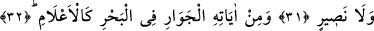
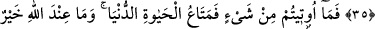
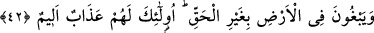
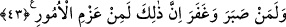

ONLARIN İŞLERİ
ARALARINDA DANIŞMA İLEDİR
30. Başınıza gelen herhangi bir musîbet, kendi ellerinizle işledikleriniz
yüzündendir. (Bununla beraber) Allah çoğunu affeder.
31. Yeryüzünde (O’nu) âciz bırakamazsınız. Allah’tan başka bir dostunuz ve bir
yardımcınız da yoktur.
32. Denizde dağlar gibi akıp gidenler (gemiler) de O’nun (varlığının)
delillerindendir.
33. Dilerse O, rüzgârı durdurur da onun (denizin) üstünde kalakalırlar. Elbette
bunda çok sabreden, çok şükreden herkes için ibretler vardır.
34. Yahut yaptıkları yüzünden onları helâk eder. Birçoğunu da affeder (kurtarır).
35. Böylece âyetlerimiz üzerinde tartışanlar, kendilerine kaçacak bir yer